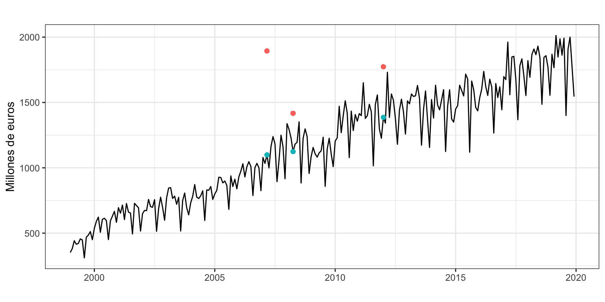

Valores perdidos y valores atípicos
Previsión con Datos Temporales (GBIA)
Introducción
En la Figura 1 se muestran dos series de datos: en el panel superior las exportaciones de España a la Unión Europea de productos químicos, una serie mensual en millones de euros; en el panel inferior la extracción de dinero de un cajero ubicado en el centro de Valencia, una serie diaria en euros.
En la serie exportaciones destaca el valor de marzo de 2007, inusualmente elevado. En concreto ese mes se exportaron 1900 millones de euros, mientras que la media del marzo anterior y posterior fue de 1130 millones de euros. Es posible que este valor atípico (outlier) se deba a un error en algún punto del proceso que va desde la toma de datos en frontera hasta su registro en Eurostat (fuente de los datos). O quizás es que ese mes hubo una exportación excepcional de productos químicos por parte de España a algún país de la Unión Europea. En cualquier caso, este dado dificultará el ajuste de la serie a un modelo para su posterior predicción, especialmente si el modelo no admite intervención. ¿No sería más adecuado trabajar con una serie sin valores atípicos?
La serie de extracción de dinero de un cajero presenta dos valores ausentes o perdidos (missing values), ambos en jueves, debido a que el cajero se estropeó y fue imposible durante esos dos días extraer dinero. La presencia de valores perdidos dificulta o imposibilita la aplicación de muchas técnicas de ajuste y previsión de series temporales1. Claramente no podemos eliminar estos datos porque se rompería la estacionalidad, habría dos semanas de seis días sin jueves. Lo que se debe hacer es rellenar estos dos huecos.
Tanto si se observan valores atípicos como datos perdidos, la solución más fácil para poder ajustar y predecir la serie usando las técnicas usuales es poner un valor adecuado que sustituya el dato atípico o el valor perdido. Al proceso de sustituir el dato de una observación por otro se le denomina imputación. El análisis de la serie imputada será más fácil que el de la serie original.
Así, tanto para valores perdidos como atípicos tendremos que aprender a imputar. Además, para los valores atípicos también tenderemos que aprender a identificarlos. ¿Cuándo un valor se sale lo suficiente de lo normal como para considerarlo atípico?
Imputación de valores perdidos
No existe una mejor forma de imputar. El proceso de imputación más adecuado dependerá, entre otros factores, de la naturaleza de la base de datos (corte transversal, longitudinal o panel), de la distribución variable (estacionaria, unimodal…) y del propio concepto que recoge la variable (exportaciones, temperatura, frecuencia…).
Como regla general, las técnicas sencillas de imputación (poca manipulación de datos y poco tiempo de computación) suelen ser tan eficaces como las más complejas, que requerirán mucho más tiempo de computación. Además, el tiempo y coste dedicado a la imputación debe ser acorde con la relevancia del análisis que se está realizando.
Si en algún momento necesitas trabajar profesionalmente con series temporales con datos perdidos, te recomiendo el paquete imputeTS que puedes descargarte desde CRAN.
Aquí vamos a ser más modestos y usar la función na.interp del paquete forecast que usa una adaptación para series temporales del método de imputación denominado interpolación lineal.2 Imputar e interpolar son dos conceptos estadísticos que, sin ser del todo equivalente, usaremos como tal en este contexto.
El método de interpolación lineal es uno de los más sencillos que existen y consiste en sustituir un valor perdido por el valor estimado con una regresión lineal obtenida a partir de los puntos vecinos del valor perdido. Para series sin estacionalidad este es el método de imputación que se aplica.
Para series con estacionalidad, primero se descompone la serie (aplicando la versión robusta de stl). Después, se aplica la interpolación lineal a la componente de la tendencia. Por último se vuelven a combinar todas las componentes –tendencia imputada, estacionalidad y error– para obtener la nueva serie imputada.
Veamos como queda la serie de dinero extraído de una cajero tras imputar los valores perdidos. La Figura 2 muestra la serie original a la que se ha superpuesto un punto sobre cada dato diario. Los dos datos imputados aparecen como puntos rojos.
dinero_imputado <- na.interp(dinero)
autoplot(dinero,
xlab = "",
ylab = "Euros",
colour = "black") +
geom_point() +
geom_point(aes(x = time(dinero)[is.na(dinero)][1],
y = dinero_imputado[is.na(dinero)][1]),
colour = "red") +
geom_point(aes(x = time(dinero)[is.na(dinero)][2],
y = dinero_imputado[is.na(dinero)][2]),
colour = "red") +
labs(colour = "Serie")
Imputación de valores atípicos
El proceso de imputación de valores atípicos es idéntico al usado para valores perdidos: una vez identificado el valor atípico, se sustituye por otro valor usando un algoritmo de imputación, por ejemplo la interpolación lineal. Sin embargo, previamente hay que identificar los valores atípicos y, de nuevo, hay una amplia literatura al respecto.
No siempre es conveniente imputar valores atípicos. Es posible que estos valores nos den información útil con respecto a la serie y permitan mejorar las predicciones. En esta categoría entran los efectos calendario (Semana Santa, días laborables, años bisiestos…), que pueden incorporarse dentro de la metodología ARIMA para mejorar las predicciones.
Caso diferente son los valores atípicos que surgen por mero error durante la manipulación de los datos o por efectos que no son de calendario y cabe esperar que no tengan lugar durante el periodo de predicción. Imputar estos valores atípicos puede mejorar el proceso de ajuste de la serie y la calidad de las predicciones.
Un valor atípico es una observación que difiere sustancialmente de la mayoría de las observaciones. El concepto de atípico es subjetivo y, por tanto, su identificación dependerá no solo de la distribución de las observaciones, sino del criterio del investigador.
Aunque existen diferentes técnicas para detectar valores atípicos, una de las más ampliamente difundidas y usadas por su sencillez y por no depender de ninguna hipótesis sobre la distribución de los datos es la prueba de Tukey:
Se calculan el primer y el tercer cuartil de las observaciones, que denominaremos \(Q_1\) y \(Q_2\) respectivamente. Recuerda que \(Q_1\) el el valor que deja por debajo un 25% de las observaciones y \(Q_3\) es el valor que deja por debajo el 75% de las observaciones. Es decir, entre \(Q_1\) y \(Q_3\) están el 50% de las observaciones.
Se obtiene el rango intercuartil \(IQR = Q_3 - Q_1\).
Se define como valor atípico cualquier valor menor que \(Q_1 - 3\cdot IQR\) o mayor que \(Q_3 + 3\cdot IQR\).
El valor de \(3\) rangos intercuartílicos es arbitrario. De hecho, en la literatura estadística es usual el valor de \(1.5\) para identificar valores atípicos (outliers) y el valor de \(3\) para identificar valores lejanos (far out). Aquí, aunque usaremos el valor de \(3\) rangos intercuartilicos, hablaremos de valores atípicos.
Si la serie sigue una distribución normal, la prueba de Tukey es equivalente a considerar atípico cualquier valor que se aleje de la media 4.7 veces la desviación típica. Como ves, el criterio usado es muy conservador. Es decir, solo valores muy alejados de la distribución de la serie se considerarán valores atípicos.
Para series temporales, la identificación de los valores atípicos se hace a partir del residuo que se obtiene tras la descomposición de la serie.
Vamos a usar la función tsoutliers del paquete forecast para identificar los valores atípicos y proponer un posible valor de imputación. Esta función usa la prueba de Tukey arriba definida para identificar los valores atípicos3 y usa la función na.interp para obtener los valores de imputación.
Veamos la aplicación de esta función en la serie de exportaciones.
tsoutliers(exportaciones)$index
[1] 99 112 157
$replacements
[1] 1098.898 1124.781 1386.168La función tsoutliers identifica tres valores atípicos en las posiciones 99, 112 y 157 de la serie. La observación 99 corresponde a marzo de 2007, muy visible en el gráfico, y las otras dos a febrero de 2008 y enero de 2012. Los valores originales para estas fechas eran
exportaciones[c(99, 112, 157)][1] 1893.880 1417.258 1773.067Observa que esta función solo identifica los valores atípicos, pero no los sustituye por los valores potenciales de reemplazamiento.
El paquete forecast dispone de la función tsclean que hace todo en uno: imputa los valores perdidos, e identifica e imputa los valores atípicos. Vemos su efecto en la serie de exportaciones en la Figura 3. Los puntos rojos muestran los tres valores identificados como atípicos (panel superior) y sus valores imputados (panel inferior).
exportaciones_imputada <- tsclean(exportaciones)
autoplot(exportaciones, main = "", xlab = "", ylab = "Millones de euros")
autoplot(exportaciones_imputada, main = "", xlab = "", ylab = "Millones de euros")

Para finalizar, recordemos que los modelos ARIMA pueden predecir perfectamente series con valores perdidos y pueden usar la intervención para incorporar los valores atípicos. Es decir, no es necesario limpiar la serie antes de la aplicación de estos modelos. Ahora bien, si deseamos aplicar un método de alisado para predecir, es necesario imputar los valores perdidos y conveniente hacer lo mismo con los valores atípicos. Hay que imputar los primeros porque los métodos de alisado son procesos iterativos y se falta un dato, el proceso se detiene; también hay que imputar los segundos porque los valores atípicos pueden distorsionar las predicciones.
Footnotes
Los métodos sencillos de previsión y los modelos ARIMA funcionan perfectamente con valores perdidos, pero la función
etspara Alisado Exponencial o las funcionesstlfytbats, para trabajar con series con más de una componente estacional, no funcionan si hay valores perdidos.↩︎El nombre de la función
na.interpviene de unir na de not available (valor perdido) e interp de interpolación.↩︎Puedes leer más detalles sobre el proceso de identificación de valores atípicos usado por la función
tsoutlierpinchando aquí↩︎